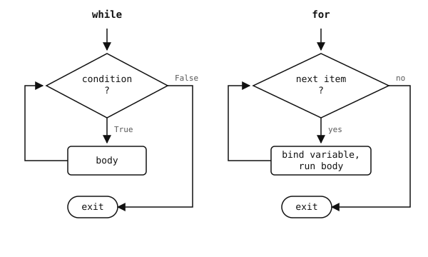

2.12. ループ¶
ループは同じコードブロックを繰り返し実行します。Python には2つの形があります。条件が真である限り実行を続ける while と、シーケンスの項目を順にたどる for です。

while は条件を繰り返しテストし、for はシーケンスが尽きるまでそれをたどります。¶
2.12.1. while ループ¶
while ループは各反復の前に条件をテストし、テストが偽になるまで本体を実行します:
count = 0
while count < 5:
print(count)
count += 1
出力:
0
1
2
3
4
条件が最初から真で決して偽にならない場合、ループは永遠に実行されます。while True: はメインループの標準的なイディオムで、break で明示的に抜けます:
while True:
step()
if done():
break
2.12.2. for ループ¶
for ループは反復可能オブジェクト（リスト、タプル、文字列、bytes、dict、その他反復をサポートするもの）の項目をたどります:
for fruit in ["apple", "banana", "cherry"]:
print(fruit)
出力:
apple
banana
cherry
同じ形は文字列に対しても機能し、その場合は各項目が1文字の文字列になります:
for letter in "OpenMV":
print(letter)
出力:
O
p
e
n
M
V
dict を直接反復すると、挿入順にそのキーが得られます:
for key in {"a": 1, "b": 2}:
print(key)
出力:
a
b
各回の処理でループ変数（fruit、letter、key）が次の項目に束縛されます。ループ終了後、その変数には最後の反復での値が残ります。
2.12.3. range¶
数値の範囲に対する for ループには range() を使います:
range(stop)-- 0, 1, ..., stop - 1。range(start, stop)-- start, start + 1, ..., stop - 1。range(start, stop, step)-- カスタムのステップ付き（負の値ではカウントダウン）。
for i in range(5): # 0, 1, 2, 3, 4
print(i)
for i in range(2, 8, 2): # 2, 4, 6
print(i)
for i in range(10, 0, -1): # 10, 9, ..., 1
print(i)
range() は値を遅延生成します。メモリ上にリストを作りません。実際の list を得るには list(range(10)) のようにラップします。
2.12.4. enumerate¶
ループでインデックスと項目の両方が必要な場合、enumerate() が (index, item) のペアを生成します:
for i, name in enumerate(["a", "b", "c"]):
print(i, name)
# 0 a
# 1 b
# 2 c
2番目の引数を渡すことで、インデックスを0以外から開始できます: enumerate(items, start=1)。
2.12.5. zip¶
2つ（以上）の反復可能オブジェクトを足並みをそろえてたどるには zip() を使います。位置ごとに1つのタプルを生成し、最も短い入力で停止します:
names = ["alice", "bob", "carol"]
scores = [88, 92, 70]
for name, score in zip(names, scores):
print(name, score)
出力:
alice 88
bob 92
carol 70
2.12.6. := によるインライン代入¶
ウォルラス演算子 := は、式でもある代入です。名前を束縛すると同時に、同じ値に評価されます。while ループでは、これによりよくある「読む、確認する、本体」のパターンを1行に折りたためます:
# without walrus
value = next_value()
while value is not None:
process(value)
value = next_value()
# with walrus
while (value := next_value()) is not None:
process(value)
2つの形は同じことを行います。代入の重複が本当に可読性を損なう場合に := を使いましょう。単に賢く見せるためだけに使ってはいけません。式を曖昧にしないよう、ほとんどの位置で括弧が必要です。